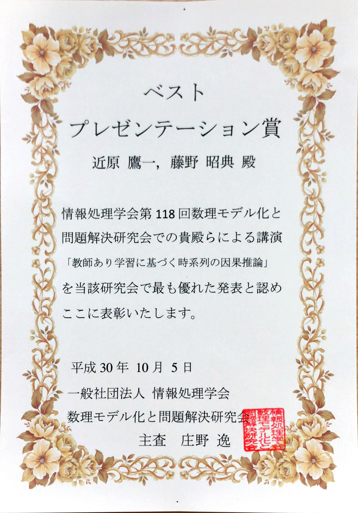

Yoichi Chikahara, Kansei Ushiyama.
"Differentiable Pareto-Smoothed Weighting for High-Dimensional Heterogeneous Treatment Effect Estimation"
arXiv preprints, arXiv:2404.17483, 2024. (Accepted to UAI2024)
[URL]
Shunsuke Horii, Yoichi Chikahara.
"Uncertainty Quantification in Heterogeneous Treatment Effect Estimation with Gaussian-Process-Based Partially Linear Model"
arXiv preprints, arXiv:2312.10435, 2023. (Accepted to AAAI2024)
[URL]
Tomoharu Iwata, Yoichi Chikahara.
"Meta-learning for heterogeneous treatment effect estimation with closed-form solvers"
arXiv preprints, arXiv:2305.11353, 2023. (Under review)
[URL] (Accepted to Machine Learning)
Yoichi Chikahara, Makoto Yamada, Hisashi Kashima.
"Feature Selection for Discovering Distributional Treatment Effect Modifiers"
arXiv preprints, arXiv:2206.00516, 2022. (Accepted to UAI2022)
[URL]
Yoichi Chikahara, Shinsaku Sakaue, Akinori Fujino, Hisashi Kashima.
"Learning Individually Fair Classifier with Path-Specific Causal-Effect Constraint"
arXiv preprints, arXiv:2002.06746, 2020. (Accepted to AISTATS2021)
[URL]
Invited Talks
-
"Accurate and Fair Machine Learning based on Causality"
The 6th StatsML Symposium (StatsML2022)
Online, February 2022.
[Abst(PDF)] [Slides(PDF)]
-
"Discovering Causal Relationships from Time Series Data"
Modeling and Network Analysis for Understanding Biological Oscillatory Phenomena (MIMS2019)
Meiji University, Tokyo, November 2019.
[Abst(PDF)] [Slides(PDF)]
-
"Causal Inference in Time Series via Supervised Learning"
Top Conference Session (Machine Learning)
Forum on Information Technology (FIT2019)
Okayama University, Okayama, September 2019.
[Slides(PDF)]
-
"Causal Inference in Time Series via Supervised Learning"
The 5th NIPS paper reading meeting
Ritsumeikan University, Osaka, June 2018.
[Slides(PDF)]
Invited Papers
-
Yoichi Chikahara.
"Which is Cause? Which is Effect?: A Supervised Learning Approach to Causal Discovery in Time Series"
Business Communication, December, 2020.
[PDF] (in Japanese)
-
Yoichi Chikahara.
"Making Fair Prediction for Each Individual: Machine Learning using Causal-Effect Constraints"
Business Communication, September, 2020.
[PDF] (in Japanese)
Books
-
(Co-authored Book)
"Problems and Solutions in Time Series Analysis"
Chapter 3.2.2: "Practice and Methods for Causal Discovery from Time Series Data"
Joho Kiko co., ltd.
[URL] (in Japanese)
Nonrefereed Poster Presentations
-
Yoichi Chikahara, Atsushi Niida, Rui Yamaguchi, Seiya Imoto, Satoru Miyano.
"Identification of Oncogenic Co-regulators using Infinite Relational Models",
The 15th International Conference on Systems Biology (ICSB2014)
Melbourne, Australia, 2014.
Awards & Scholarships
-
Honoroble Award:
"Developing a causal inference technique for time series data via supervised learning"
NTT Communication Science Laboratories, 2019/04/25.

-
Best Presentation Award:
"Causal Inference in Time Series via Supervised Learning"
Mathematical Modeling and Problem Solving (MPS), The Information Processing Society of Japan (IPSJ), 2018/10/05.

-
Scholarship for Working Professionals:
Grant-type scholarship for supporting promising PhD candidates who can contribute to international communities in information science.
Business Communications Company Limited, 2020.
-
Hochschulsommerkurse (HSK):
Grant-type scholarship for university summer courses offered in Germany.
Deutscher Akademischer Austauschdienst (DAAD), 2011.
Grants
-
Yoichi Chikahara
"Causal Inference from Incomplete Data for Fair Machine Learning Predictions"
Innovations in Mathematical and Information Sciences to Build the Next-Generation AI
ACT-X, Japan Science and Technology Agency (JST), 2023.10 - 2026.03. (Acceptance rate: 19.9%)
[List of accepted projects] [Project summary (PDF)]
Academic Activities
Teaching
-
"Applied Statistics"
Point and interval estimation, Hypothesis testing, and Analysis of variance (ANOVA)
Adjunct Lecturer
Department of Intelligent Information Engineering and Sciences, Faculty of Science and Engineering, Doshisha University, 2024 (Fall).
[URL (in Japanese)]
-
"Special Lectures on Information Science & Technology I"
Introduction to Statistical Causal Inference: Bayesian networks, Structural causal models (SCMs), and Potential outcome framework
Adjunct Lecturer
Graduate School of Information Science and Technology, Osaka University, 2024 (Spring).
[URL (in Japanese)]
Internship Supervision
-
Hans Jarett Ong, Ph.D. candidate, The Nara Institute of Science and Technology (NAIST), 2024.08 - 2024.09.
Theme Title: Causal Graph Discovery from Small Observational and Experimental Data under Various Environments
-
Kansei Ushiyama, Ph.D. candidate, The University of Tokyo, 2023.08 - 2023.09.
Theme Title: Causal Effect Estimation from Small High-Dimensional Data
Accepted as the publication at UAI2024 (Acceptance Rate: 27%).
Patents
-
No.2023-002724. Tomoharu Iwata, Yoichi Chikahara.
"Meta-learning method, meta-learning apparatus, and program."
NTT, 2023/03/31.
-
No.2022-5211777. Yoichi Chikahara.
"Feature selection method, relevance evaluation method, feature selection apparatus, relevance evaluation apparatus, and program."
NTT, 2022/05/19.
-
No.2021-553925. Yoichi Chikahara, Akinori Fujino.
"Learning apparatus, classification apparatus, learning method, classification method and program."
NTT, 2019/11/08.
-
No.2018-071917. Yoichi Chikahara, Akinori Fujino.
"Causation learning apparatus, causation estimation apparatus, causation learning method, causation estimation method and program".
NTT, 2018/04/03.
-
No.2016-126052. Yoichi Chikahara, Akinori Fujino.
"Causation learning apparatus, causation estimation apparatus, causation learning method, causation estimation method and program".
NTT, 2016/06/24.
Media Publications
-
"NTT has created fair and accurate machine learning technologies based on causal relationships"
NTT Press Release, 2021/06/01.
[Link] (in Japanese)
-
"Fair predictions using causal inference: NTT and Kyoto University have developed a novel machine learning technology"
Nikkan Kogyo Shimbun, 2021/06/02 (page 5).
[Link] (in Japanese)
-
"NTT has created fair and accurate machine learning technologies based on causal relationships"
Telecom Industry News, 2021/06/07 (page 1).
-
"Questions from young researchers"
BioSupercomputing Newsletter, 2014/09 (Vol. 11).
[Link (JP)] [Link (EN)]
-
"Keio University has developed a long-awaited fully SBML supported biochemical simulator"
MyNavi News, 2013/04/19.
[Link] (in Japanese)
Exhibitions
-
"Ask me how to make a fair decision for everyone"
Exhibition 02, NTT Communication Science Laboratories OPEN HOUSE 2021
[Link]
-
"Which is cause? Which is effect? Learn from data!"
Exhibition 05, NTT Communication Science Laboratories OPEN HOUSE 2019
[Link]
Dissertations
-
Yoichi Chikahara.
Ph.D. Dissertation: Causal Inference for Scientific Discoveries and Fairness-Aware Machine Learning
Department of Intelligence Science and Technology, Graduate School of Informatics, Kyoto University, 2022.
[Dissertation(PDF)]
-
Yoichi Chikahara.
Master Thesis: An Infinite Relational Model for Integrative Analysis of Cancer Genome Data
Department of Computer Science, Graduate School of Information Science and Technology, The University of Tokyo, 2015.
-
Yoichi Chikahara.
Bachelor Thesis: Developing Biochemical Network Simulator with Adaptive Step Size Numerical Integration
Department of Biosciences and Informatics, Faculty of Science and Technology, Keio University, 2013.